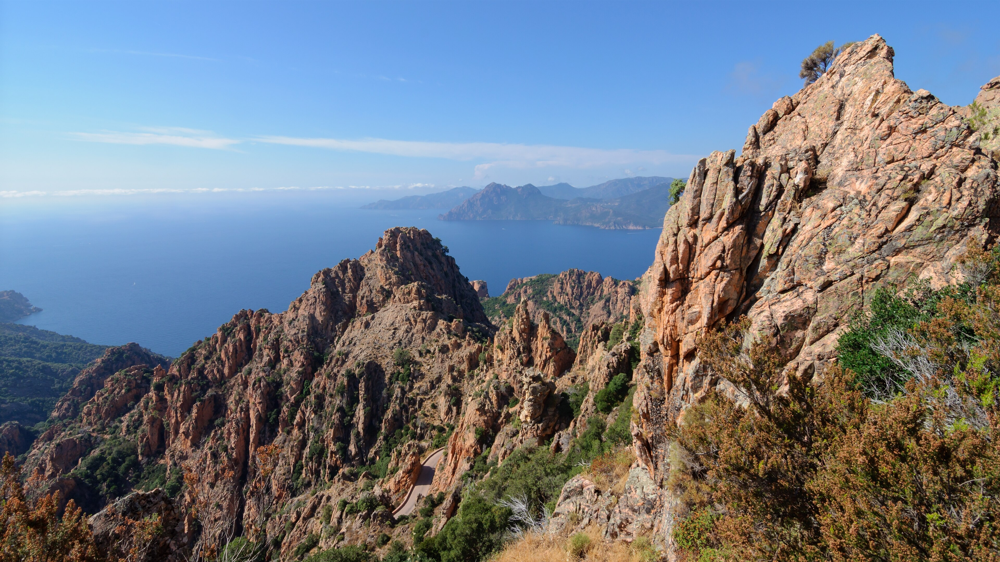
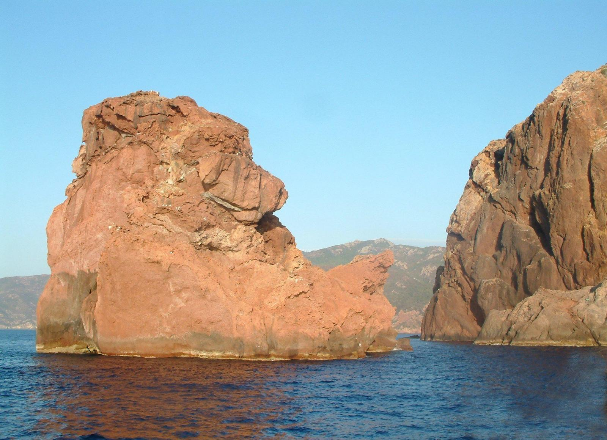

📍 Location: Western coast of Corsica, Corse-du-Savoie department, France — encompassing the Gulf of Porto, the Calanche of Piana, the Gulf of Girolata, and the Scandola peninsula
📅 Period: Geological formation spanning roughly 250 million years; human habitation from the Neolithic through the Genoese period
🏷️ Category: Natural
⚠️ Status: UNESCO World Heritage Site (inscribed 1983)
📏 Significance: A rare convergence of porphyritic volcanic rock, dramatic coastal erosion, endemic flora and fauna, and one of the Mediterranean's most pristine marine reserves
The sea approaches Corsica from the west with a certain arrogance. It has spent a hundred million years carving at the island's flank, and for most of that coastline it has succeeded — the western shore is a sequence of bays and headlands that could belong to any Mediterranean island. Then, between the gulfs of Sagone and Ajaccio, something strange happens. The island refuses. The rock here is not the limestone of Provence or the schist of the Maures. It is porphyry — a volcanic stone of deep rose and violet, studded with crystals of feldspar that catch the light like frost. The sea attacks it, and the rock does not yield in the ordinary way. It splinters into pinnacles, into needles, into shapes that look less like geology than like a fever dream.

This is the Gulf of Porto, and it is the most extraordinary stretch of coastline in France. The UNESCO World Heritage property, inscribed in 1983, is not a single site but a composite of four distinct landscapes: the Calanche of Piana, a forest of red rock spires above the sea; the Gulf of Porto itself, a deep blue inlet ringed by cliffs; the Gulf of Girolata, accessible only by boat or on foot, with a Genoese tower watching over a village of fewer than twenty souls; and the Scandola Reserve, a peninsula of volcanic rock that has been protected from human interference for so long that its seabirds have forgotten to fear boats.
The property covers roughly 11,800 hectares, of which more than half is marine. It is one of the few UNESCO sites in Europe where the boundary between land and sea is not a line but a gradient — where the same geological forces that shaped the cliffs continue to operate beneath the waves, and where the maquis, that dense and fragrant Corsican scrub, grows down to the waterline and sometimes into it. To sail along this coast is to understand that the Mediterranean is not a single sea but a thousand different seas, and that this particular one has been shaped by fire, wind, and the stubborn refusal of ancient rock to erode quietly.
The first impression is one of color. The porphyry is not merely red; it is a shifting spectrum that runs from rust to crimson to a deep aubergine depending on the hour and the season. At dawn, when the mistral blows from the northwest, the cliffs appear almost black. At sunset, when the light comes low and horizontal, they glow as if lit from within. The maquis — the wild rosemary, the cistus, the myrtle, the lentisk — releases its oils into the air, and the whole coast smells of resin and salt and something older, something mineral. The Greeks called Corsica Kalliste, the beautiful one. They were not exaggerating. They were simply not specific enough. This coast is not beautiful in the way that a garden is beautiful. It is beautiful in the way that a wound is beautiful — raw, exposed, and still healing.
The story of this coast begins not with the sea but with fire. Approximately 250 million years ago, during the Permian period, a massive volcanic complex erupted across what is now western Corsica. The magma that cooled here was not ordinary basalt. It was rich in silica and alkali feldspar, and as it cooled slowly beneath the surface, it crystallized into porphyry — a rock with large, distinct crystals embedded in a finer matrix. The name comes from the Greek porphyra, the color purple, and the stone has been prized since antiquity for its hue and hardness. The Romans quarried porphyry in Egypt and used it for imperial sarcophagi and columns. The Corsican porphyry is not the same stone, but it shares the same stubbornness, the same refusal to be worked easily.

The volcanic activity subsided, and the sea began its long assault. The cliffs of the Calanche are the result of that assault. The porphyry is harder than the surrounding rock, so it eroded unevenly. Soft layers washed away, leaving the harder spires standing. Wind and salt spray carved the surfaces into shapes that seem almost intentional — a face here, a tower there, a procession of figures that the locals have named and renamed over centuries. The Calanche is not a single formation but a dense cluster of them, spread over several square kilometers of hillside above the Gulf of Porto. The name comes from the Corsican calanca, meaning a steep, narrow valley or cove. The French spelling is Calanche; the Corsican is Calanches. Either way, the word suggests a place that is difficult to reach, which is precisely the point.
Human habitation came late and left few marks. The Neolithic peoples of Corsica built their dolmens and menhirs inland, on the plateaus where agriculture was possible. The coast was too steep, too exposed, too difficult. The Greeks and Romans knew of the island but showed little interest in this particular stretch of it. The Genoese, who ruled Corsica from the thirteenth century until the eighteenth, built a series of coastal towers to warn of pirate raids — one of them still stands at Girolata, a squat stone cylinder on a promontory above the village. The tower is a reminder that this coast was not always a tourist destination. For centuries, it was a frontier, a place where the sea brought danger rather than visitors.
The modern history of the site begins with protection. In 1975, the French government established the Scandola Nature Reserve, a marine protected area covering the peninsula and the waters around it. The reserve was the first of its kind in France, and it was designed to protect not just the geology but the extraordinary biodiversity of the area. The combination of volcanic rock, clear water, and strong currents creates a unique marine ecosystem, with coral reefs, seagrass meadows, and a population of ospreys that nest on the cliffs and fish in the shallows. In 1983, UNESCO inscribed the entire complex — the Calanche, the Gulf of Porto, the Gulf of Girolata, and Scandola — as a World Heritage Site, recognizing it as a landscape of outstanding universal value.
The inscription was not without controversy. Some local politicians argued that the designation would restrict development and tourism. Others pointed out that the area was already protected by French law and that UNESCO status would add little. In the end, the designation proved to be a boon. It brought international attention, funding for conservation, and a framework for managing the competing demands of tourism, fishing, and environmental protection. Today, the site is one of the most visited natural attractions in Corsica, drawing hundreds of thousands of visitors each year, most of them by boat. The challenge, as always, is to balance access with preservation — to allow people to see this extraordinary place without loving it to death.
The cultural history of the site is thinner than its geological history but no less interesting. The village of Girolata, accessible only by sea or by a long hike through the maquis, has been inhabited since at least the sixteenth century. It was a fishing village, and for a time a hideout for pirates and smugglers. The Genoese tower, built in the 1550s, was part of a chain of watchtowers that stretched along the entire Corsican coast. Today, Girolata has a permanent population of about fifteen people, swelling to a few hundred in summer. There are a handful of restaurants, a few guesthouses, and no roads. The village is a living relic of a time when the Mediterranean was a network of small, isolated communities connected by boats rather than highways.
The Calanche of Piana, by contrast, has a more recent human history. The village of Piana, perched on a plateau above the Calanche, was founded in the sixteenth century by Greek refugees fleeing the Ottoman conquest of the Peloponnese. They brought their language and their Orthodox faith, and for a time Piana was a Greek-speaking enclave within a French-speaking island. The Greek dialect has largely disappeared, but the village retains a distinct character — its houses are clustered tightly around a church, and its streets are too narrow for cars. From the village, a path leads down to the Calanche, and the view from the belvedere is one of the most famous in Corsica. The red spires rise from the maquis like the ruins of a forgotten city, and the sea beyond is a blue so intense that it seems almost artificial.
The Calanche of Piana is the most dramatic component of the property, and the one that most visitors associate with the Gulf of Porto. It is a landscape of verticality. The porphyry cliffs rise directly from the sea, their surfaces carved into a labyrinth of gullies, pinnacles, and needles. The rock is not uniform in color. It ranges from a deep, almost black purple to a pale rose, depending on the angle of the sun and the amount of iron oxide in the stone. The shapes are equally varied. Some are tall and thin, like obelisks. Others are broad and rounded, like the backs of whales. Still others are pierced with holes and arches, the result of softer rock eroding faster than the harder layers around it.
The most famous formation is the Tête de Chien, the Dog's Head, a rock that does indeed resemble the profile of a dog when viewed from a certain angle. Nearby is the Rocher du Lion, the Lion Rock, and the Deux Yeux, two holes in a cliff face that look like eyes. The names are human attempts to impose order on a landscape that resists it. The Calanche is not a place of clear symbols. It is a place of ambiguity, where the rock seems to shift and change as you look at it, where the same formation can look like a castle from one angle and a monster from another. This is not a landscape that invites interpretation. It is a landscape that invites surrender.
The Gulf of Porto itself is a deep, narrow inlet surrounded by high cliffs. The water is clear and cold, fed by springs that emerge from the base of the cliffs. The gulf is a natural harbor, and it has been used as such for centuries. The town of Porto, at the head of the gulf, is a small resort with a handful of hotels and restaurants. It is not beautiful in the conventional sense — the architecture is functional, the beach is pebbly — but it has a certain charm, and it serves as the main gateway to the Calanche and the Scandola Reserve. From Porto, boats leave regularly for the Scandola peninsula, a trip that takes about an hour and passes beneath some of the most dramatic cliffs in the Mediterranean.
The Scandola Reserve is the wildest part of the property. It is a peninsula of volcanic rock, roughly 900 hectares in area, with cliffs that rise 500 meters from the sea. The rock here is older than the porphyry of the Calanche — it is a mix of basalt and rhyolite, formed during a period of volcanic activity that predates the porphyry eruption. The cliffs are nesting sites for a remarkable variety of seabirds: ospreys, peregrine falcons, Eleonora's falcons, and colonies of shags and gulls. The ospreys are the most famous. They were nearly extinct in the Mediterranean in the 1970s, and the Scandola population is one of the few that has recovered. The birds nest on the cliffs and fish in the waters below, and they have become a symbol of the reserve's success.
The marine environment of Scandola is equally remarkable. The reserve is one of the few places in the Mediterranean where the seafloor has not been trawled or dredged. The result is a pristine ecosystem of seagrass meadows, coral reefs, and underwater caves. The water is exceptionally clear, with visibility often exceeding 30 meters. Divers come from all over Europe to explore the reserve's underwater landscapes, which include fields of red coral, forests of gorgonians, and schools of fish that have lost their fear of humans. The reserve is strictly protected: fishing is prohibited, and diving is allowed only with a permit. The result is a marine environment that is as close to pristine as any in the Mediterranean.
The Gulf of Girolata is the smallest and most isolated component of the property. It is a bay on the northern edge of the Scandola peninsula, accessible only by boat or by a hiking trail that takes about two hours from the nearest road. The village of Girolata sits at the head of the bay, a cluster of stone houses around a small church. The Genoese tower stands on the headland above, a reminder of the days when this coast was a frontier. The bay itself is a natural harbor, with clear water and a small beach. It is a popular stop for boats touring the Scandola Reserve, but it remains remarkably unspoiled. There are no cars, no paved roads, and no streetlights. At night, the only illumination comes from the stars.
The vegetation of the entire property is a study in adaptation. The maquis — the dense scrub that covers the hillsides — is a community of plants that have evolved to survive in a harsh environment. The soil is thin and rocky. The wind is constant. The salt spray is relentless. The plants that thrive here are tough and aromatic: rosemary, thyme, cistus, myrtle, lentisk, and the strawberry tree, which produces a fruit that looks like a strawberry but tastes like nothing at all. The maquis is not just a backdrop. It is an active participant in the landscape, its roots holding the soil in place, its oils feeding the occasional wildfires that sweep through the hills. The fires are not a disaster. They are part of the cycle. The maquis regrows, and the cycle continues.
The geology of the property is a textbook of volcanic processes. The porphyry of the Calanche is a subvolcanic intrusion — magma that cooled slowly beneath the surface, allowing large crystals to form. The basalt and rhyolite of Scandola are extrusive rocks — lava that cooled quickly on the surface, forming fine-grained rocks with small crystals. The difference in cooling rates explains the difference in appearance. The porphyry is coarse and colorful. The basalt is fine and dark. The rhyolite is banded and pale. Together, they tell a story of a volcanic system that was active for millions of years, producing a variety of rocks that have weathered into a variety of landscapes.
The Gulf of Porto is not a place where people live in the conventional sense. It is a place that people visit, and the lives of those who do live here are shaped by the demands of tourism and conservation. The village of Porto has a permanent population of about 500 people, a number that swells to several thousand in summer. The economy is almost entirely dependent on visitors. Hotels, restaurants, boat tours, and diving schools employ most of the local workforce. The fishing industry, once the mainstay of the coastal villages, has declined. The waters around Scandola are protected, and the fishing that continues is small-scale and artisanal. The result is a community that is both prosperous and precarious, dependent on a resource that must be protected in order to be exploited.
The relationship between tourism and conservation is the central tension of the property. The Scandola Reserve is one of the most popular natural attractions in Corsica, and the number of visitors has grown steadily since the UNESCO inscription. The reserve is accessible only by boat, and the boats that carry visitors are regulated: they must stay a certain distance from the cliffs, they must not anchor in the seagrass meadows, and they must not approach the nesting birds too closely. The regulations are enforced by the reserve's staff, who patrol the waters in small boats and monitor the behavior of both visitors and wildlife. The system works, but it is fragile. A single irresponsible boat captain can disturb a nesting colony or damage a coral reef. The reserve's managers know that the future of the site depends on the continued cooperation of the tourism industry.
The lifestyle of the people who live in the Gulf of Porto is shaped by the seasons. Summer is a time of intense activity: the hotels are full, the restaurants are busy, the boats are booked weeks in advance. Winter is a time of quiet. The hotels close, the boats are hauled out of the water, and the villages return to their permanent populations. The contrast is stark. In summer, Porto is a bustling resort town. In winter, it is a village of a few hundred people, many of them elderly, living on pensions and remittances from family members who have moved to the mainland. The winter is a time of maintenance and repair, of preparing for the next season. It is also a time of community, when the people who remain have the place to themselves.
The cultural life of the region is rooted in Corsican traditions. The Corsican language, a distinct Romance language related to Italian, is still spoken by some older residents, though its use has declined. The polyphonic singing of Corsica — a form of a cappella music that is one of the island's most distinctive cultural expressions — is performed at festivals and in churches. The food is Mediterranean and mountain: chestnuts, charcuterie, brocciu (a fresh cheese made from sheep's milk), and seafood. The wine is Corsican, from vineyards in the interior. The culture is not a museum piece. It is a living tradition, adapted to the demands of modern life but still recognizable as something distinct.
The relationship between the people and the landscape is one of respect and dependence. The maquis is not just scenery; it is a resource. The herbs are harvested for cooking and medicine. The wood is used for fuel and construction. The stone is quarried for buildings. The sea provides fish and, increasingly, tourists. The people of the Gulf of Porto know that their livelihood depends on the health of the environment. They have seen what happens when a coastline is overdeveloped — the Costa Smeralda in Sardinia, just across the strait, is a cautionary tale. They do not want that to happen here. The UNESCO designation is a tool for preventing it, a way of saying: this place is special, and it must be protected.
The daily life of the reserve's staff is a study in patience and vigilance. The wardens patrol the waters, monitor the wildlife, and educate visitors. They count osprey nests, check the health of the coral reefs, and respond to reports of illegal fishing. They are not police officers, but they have the authority to enforce the reserve's regulations. Their work is often tedious, sometimes dangerous, and always essential. Without them, the reserve would be a paper park, protected on paper but not in reality. With them, it is a living example of what conservation can achieve.
The UNESCO inscription of 1983 was a turning point for the Gulf of Porto. It brought international recognition, funding for conservation, and a framework for managing the competing demands of tourism, fishing, and environmental protection. But it also brought new challenges. The number of visitors has grown steadily, and the infrastructure has struggled to keep up. The roads are narrow and winding, and in summer they are clogged with cars and tour buses. The parking lots at the Calanche are often full by mid-morning. The boats that carry visitors to Scandola are numerous, and the reserve's staff must work hard to ensure that they follow the rules.
The biggest threat to the property is not tourism per se but the infrastructure that supports it. The pressure to build more hotels, more restaurants, more parking lots is intense. The local economy depends on visitors, and the visitors need places to stay and eat. The challenge is to accommodate them without destroying the landscape that attracts them. The French government has responded with strict planning regulations. New construction is limited, and existing buildings must meet high environmental standards. The result is a landscape that remains remarkably unspoiled, but the pressure is constant. The balance between access and preservation is never stable. It must be negotiated anew with each generation.
Climate change is a newer and more insidious threat. The Mediterranean is warming faster than the global average, and the effects are already visible. The seagrass meadows that shelter juvenile fish are stressed by rising temperatures. The coral reefs are bleaching. The ospreys are nesting earlier, and their chicks are fledging at a time when the fish they depend on are less abundant. The maquis is drying out, and the risk of wildfire is increasing. The reserve's managers are monitoring these changes, but they are powerless to stop them. The best they can do is to reduce other stresses — pollution, overfishing, physical damage — so that the ecosystem is as resilient as possible in the face of a changing climate.
The human connection to the site is not just economic. It is emotional and cultural. The people of the Gulf of Porto have a deep attachment to the landscape. They know its moods, its seasons, its secrets. They have names for the rocks and the coves that do not appear on any map. They remember the days when the ospreys were rare and the days when they returned. They remember the fires that swept through the maquis and the floods that washed out the roads. They remember the visitors who came and the visitors who stayed. The landscape is not a backdrop to their lives. It is a character in their stories, a presence that shapes their identity.
The legacy of the Gulf of Porto is not just the landscape itself. It is the idea that a place can be both beautiful and protected, that tourism and conservation can coexist, that the human and the natural can be reconciled. This idea is not unique to Corsica, but it is particularly well realized here. The property is a model for other Mediterranean coastal sites, a demonstration that it is possible to preserve a landscape while allowing people to enjoy it. The model is not perfect. It requires constant vigilance, constant negotiation, constant compromise. But it works. The Gulf of Porto is still wild, still beautiful, still alive. That is no small achievement.
Stand on the belvedere above the Calanche at sunset, and you will understand why people come here. The rock glows red, the sea turns silver, and the maquis releases its scent into the cooling air. The wind is constant, a reminder that this coast is not sheltered. It is exposed to the full force of the Mediterranean, and that exposure is what makes it beautiful. The landscape is not gentle. It is not welcoming. It is not designed for human comfort. It is designed for something else — for the slow, patient work of geology, for the stubborn persistence of life in a harsh environment, for the beauty that emerges when nothing is easy.
The people who live here know this. They know that the landscape is not a commodity to be sold but a inheritance to be protected. They know that the tourists who come to see the Calanche are not just customers but witnesses. They know that the ospreys that nest on the cliffs of Scandola are not just birds but symbols. The relationship between the human and the natural is not a simple one. It is a negotiation, a compromise, a dance. The people of the Gulf of Porto have been dancing this dance for generations, and they have become very good at it.
The future of the site depends on the continuation of this dance. The threats are real: climate change, over-tourism, the pressure to develop. But the resources are also real: the UNESCO designation, the French planning laws, the dedication of the reserve's staff, the attachment of the local people. The outcome is not predetermined. It will depend on the choices that are made in the coming decades. The Gulf of Porto is not a museum. It is a living landscape, and living landscapes change. The question is not whether it will change but how. The answer will be determined by the people who care for it.
Visit the Gulf of Porto, and you will see something rare: a place that is both wild and protected, both beautiful and accessible, both ancient and alive. You will see the porphyry cliffs of the Calanche, the ospreys of Scandola, the Genoese tower at Girolata, the maquis that covers the hills. You will smell the rosemary and the salt. You will feel the wind. You will understand, perhaps for the first time, what it means for a landscape to be truly alive. And you will carry that understanding with you, a reminder that the world is not just a collection of resources but a community of beings, and that we are part of that community, whether we like it or not.
The Gulf of Porto is a place where geology becomes landscape and landscape becomes culture. The porphyry cliffs of the Calanche, the osprey nests of Scandola, the Genoese tower at Girolata, the maquis that covers the hills — these are not separate phenomena. They are part of a single system, a system that has been shaped by volcanic fire, by wind and wave, by human hands and human choices. The UNESCO designation recognizes this unity. It says that this place is not just a collection of interesting rocks and birds but a coherent whole, a landscape that has meaning beyond its individual parts.
The significance of the Gulf of Porto is not just scientific or aesthetic. It is also moral. The site is a demonstration that it is possible to protect a landscape while allowing people to enjoy it. It is a demonstration that tourism and conservation can coexist. It is a demonstration that the human and the natural can be reconciled. These are not small achievements. They are models for the rest of the world, examples of what can be done when people decide that a place is worth protecting. The Gulf of Porto is not perfect. It has its problems, its tensions, its unresolved questions. But it is a work in progress, a living experiment in how to live with a landscape rather than against it.
The last impression is one of light. The light in the Gulf of Porto is unlike anywhere else in the Mediterranean. It is clear and hard and bright, and it makes the colors of the porphyry sing. The reds are redder, the blues are bluer, the greens of the maquis are greener. The light is not just a visual phenomenon. It is a presence, a force that shapes the landscape and the lives of the people who live in it. The light is what people remember when they leave. It is what brings them back. It is what makes the Gulf of Porto not just a place but a state of mind.
The rose of the Corsican winds is not a metaphor. It is a description. The porphyry of the Calanche is rose-colored, and the winds that shape it are the mistral and the libeccio, the tramontane and the scirocco. The rose is a flower that grows in the maquis, and it is also a color that appears in the rock. The rose is a symbol of beauty and fragility, and it is also a symbol of resilience. The Gulf of Porto is all of these things. It is beautiful and fragile and resilient. It is a place that has been shaped by forces beyond human control, and it is a place that humans have chosen to protect. It is a place that will endure, if we let it. It is a place that will continue to inspire, if we are wise. It is a place that will remain, if we are brave.
Q1: What is the Gulf of Porto known for?
The Gulf of Porto is known for its dramatic porphyritic rock formations, particularly the Calanche of Piana, a forest of red rock spires above the sea. It is also known for the Scandola Nature Reserve, one of the Mediterranean's most pristine marine protected areas, and for the isolated village of Girolata, accessible only by boat or foot.
Q2: When was the Gulf of Porto designated a UNESCO World Heritage Site?
The site was inscribed in 1983, recognizing its outstanding geological, biological, and aesthetic value.
Q3: Is the Gulf of Porto a UNESCO World Heritage Site?
Yes, it is a natural World Heritage Site, one of the few in France, and it is managed jointly by the French government and local authorities.
Q4: How can one visit the Gulf of Porto?
The site is accessible by road from Ajaccio and Calvi, and by boat from the town of Porto. The Scandola Reserve can only be visited by boat, and the Calanche can be explored on foot or by car. The best time to visit is spring or autumn, when the weather is mild and the crowds are smaller.
Q5: What are the biggest threats facing the Gulf of Porto today?
The biggest threats are climate change, over-tourism, and the pressure to develop the coastline. The reserve's managers are working to address these threats through strict regulations, monitoring, and education.
| Detail | Information |
|---|---|
| Nearest City | Ajaccio (80 km) or Calvi (70 km) |
| Access | By road (D81) to Porto, then by boat to Scandola and Girolata; hiking trails to Girolata and the Calanche |
| Best Season | May-June or September-October |
| Current Status | Open year-round; some facilities closed in winter |
| Permissions | No special permits for most areas; diving in Scandola requires a permit |
| Site Museum | Maison du Parc in Porto (information center) |
| Advisory | Book boat tours in advance during summer; bring sun protection and water; respect wildlife and stay on marked trails |
| Fact | Detail |
|---|---|
| Site Name | Gulf of Porto: Calanche of Piana, Gulf of Girolata, Scandola Reserve |
| Location | Corsica, France |
| Category | Natural |
| UNESCO Status | World Heritage Site |
| Year Inscribed | 1983 |
| Main Period(s) | Permian volcanism (250 million years ago) to present |
| Primary Significance | Exceptional geology, pristine marine environment, endemic species, cultural landscape |
| Key Features | Calanche of Piana, Scandola Reserve, Gulf of Girolata, Genoese tower, osprey colonies, maquis vegetation |